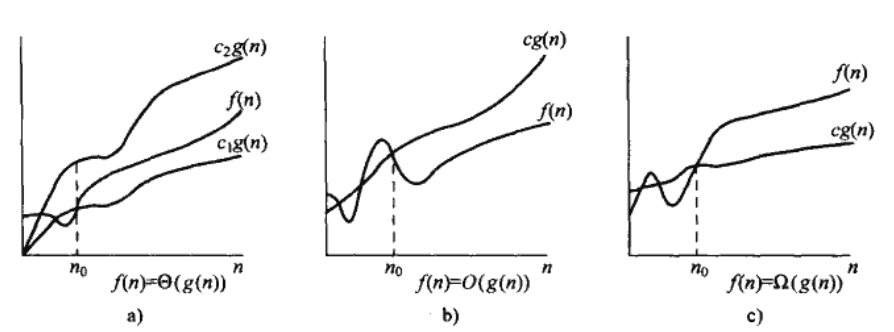
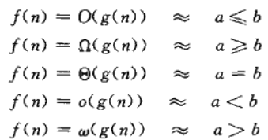

2012.07.06 首先开始的项目 从明天正是开始 今天先有一个overview就好了。 2012.07.07 练车回来头晕晕乎乎的 下午才开始看书。
(首先是这三个字母的输入： 希腊字母VIM输入)
θ 表示的是曲线的上线和下限
Ο 表示的是曲线的上限 , ο(这个是小写的)表示的是非tight的 例如 ο(n2)=g(n), 而大写的Ο既可以表示tight的也可以表示untight的
Ω 表示的是曲线的下限， ω同上所示
具体如图：

可以类比于 比大小，如下：
